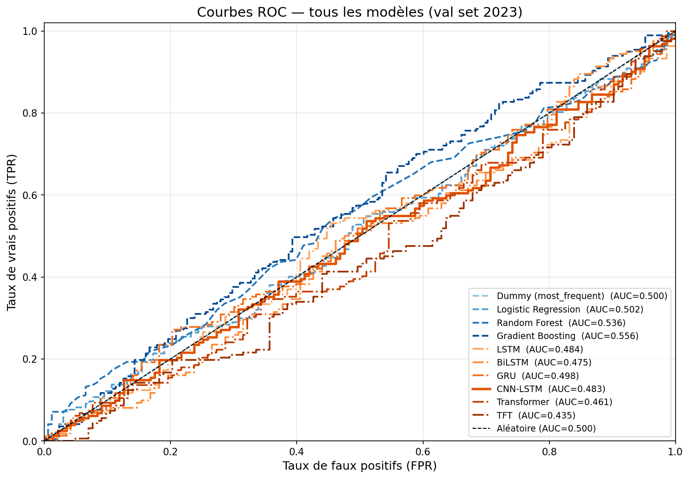
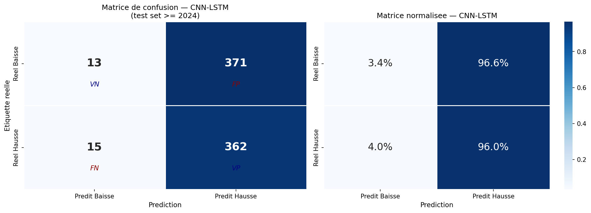
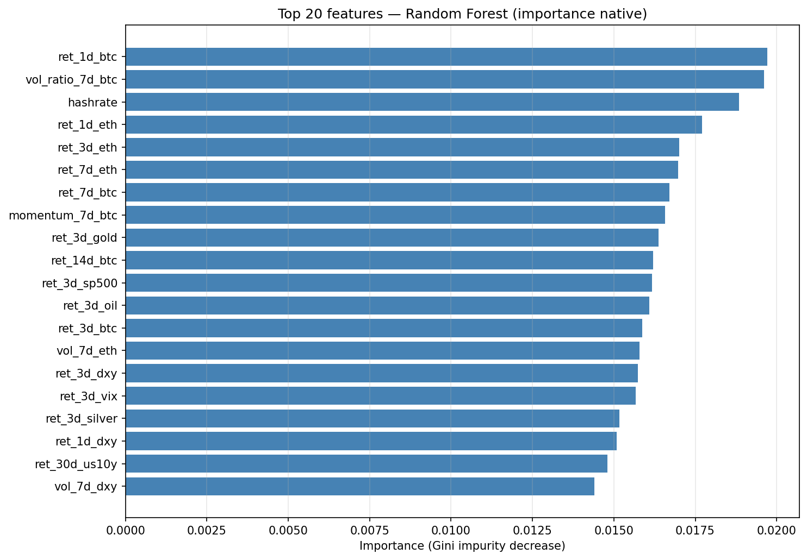
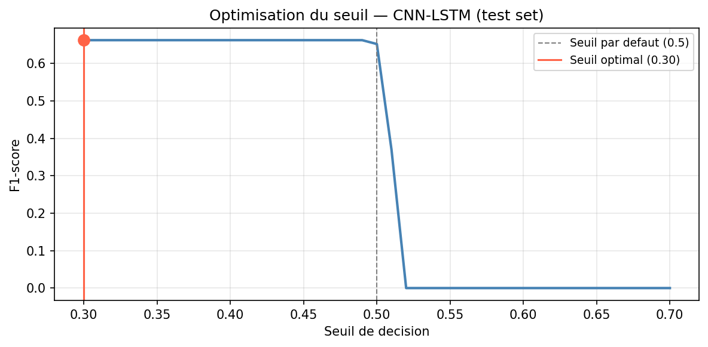
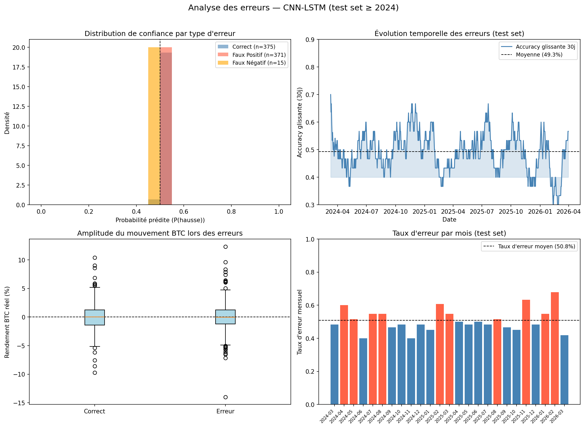
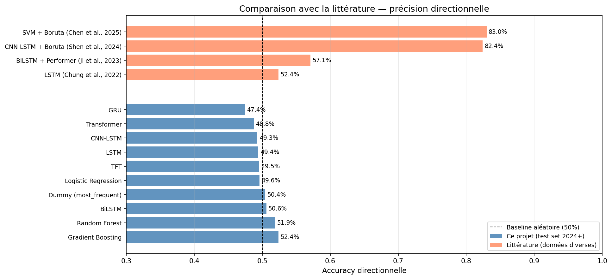

ML/DL models for next-day Bitcoin movement classification
Multi-asset time-series classification to predict whether Bitcoin will rise or fall the next day
Given the last 60 days of multi-asset market data, predict whether BTC will close HIGHER (↑) or LOWER (↓) the next day.
End-to-end workflow from raw data collection to production predictions
label_dir_1d never used as feature
80+ features constructed per day, grouped by category and asset
shift(1)) to avoid look-ahead bias. Only data known at time t-1 is used to predict day t.
7 models trained: 6 PyTorch deep learning + 1 gradient boosting
Images generated by 04_results_analysis.ipynb — located in models/
models/ directory. If they appear broken, run 04_results_analysis.ipynb first.

Area Under the ROC Curve measures the model's ability to discriminate between UP and DOWN days across all thresholds.

True vs. predicted classes on the test set. Rows = actual labels, Columns = predicted labels.

Mean Decrease in Impurity for top features. Use as a guide for feature selection and understanding which signals drive predictions.

Precision-Recall trade-off as the classification threshold varies. The optimal threshold maximizes F1.

Analysis of when and why the model makes errors — often during high volatility regimes or market structure breaks.

Benchmark against published results from academic papers. Validates or contextualizes model performance relative to the state of the art.
Explore how key market signals influence the model's directional bias
python example_usage.py.